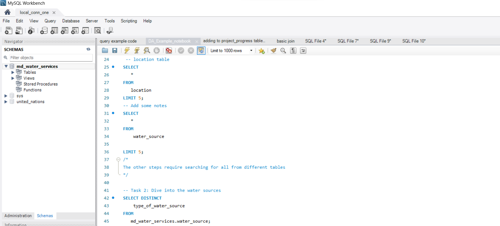
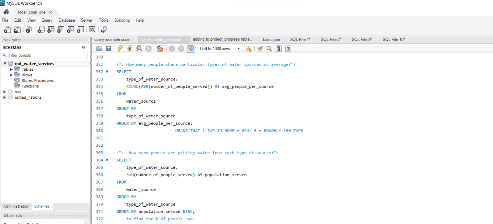

Maji Ndogo is a fictional country that mirrors real-world challenges.
With a database of 60,000 records, meticulously collected by a team of
engineers, field workers, scientists, and analysts.
The purpose is to piece together the puzzle of the water crisis that the
country is facing. The objective is to find solutions to the water
crisis.
Using Google Sheets I was able to sort through the data and remove unnecessary data. I imported and cleaned the data, to create new features and visualisations, then interpret the results.
Using SQL to find patterns and potential solutions

Finding accurately how many people use certain water sources.
Creating a table so that engineers can input their progress on any cite.
To easily see trends through a dashboard
Maji Ndogo is facing a water crisis, but through data analysis we were able to find discrepancies with the way in which data was collected. Managed to find ways to potentially solve the problem and the social issues facing residents when they try to access water.